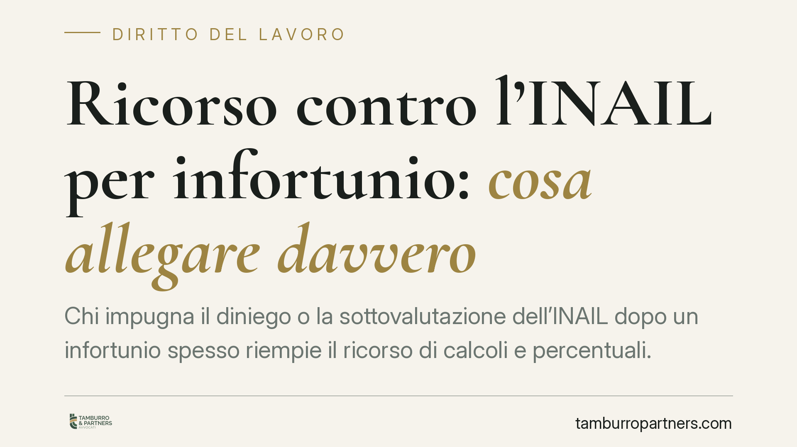

Ricorso contro l'INAIL per infortunio: cosa allegare davvero
Chi impugna il diniego o la sottovalutazione dell'INAIL dopo un infortunio spesso riempie il ricorso di calcoli e percentuali. La giurisprudenza di merito ribadisce l'opposto: al lavoratore basta allegare i fatti essenziali, mentre la traduzione in numeri spetta al consulente tecnico. Capire questa distinzione evita errori che indeboliscono la domanda sin dal deposito.

Il principio: fatti al ricorrente, numeri al tecnico
Quando un lavoratore contesta all'INAIL il mancato riconoscimento di un infortunio, o la valutazione ridotta dei postumi, la tentazione è costruire un ricorso "tecnico": tabelle di menomazione, percentuali, stime di rendita. È un approccio che spesso si ritorce contro chi ricorre.
L'orientamento della giurisprudenza di merito conferma una regola semplice: il ricorrente deve allegare i fatti costitutivi della propria domanda — l'esistenza dell'infortunio, la sua natura, l'entità e la collocazione temporale delle lesioni. La valutazione tecnica — il grado di menomazione, l'applicazione delle tabelle, il calcolo delle conseguenze indennizzabili — è invece rimessa alla consulenza tecnica d'ufficio (CTU) disposta dal giudice.
In sintesi: il ricorrente porta i fatti, il tecnico li traduce in numeri.
Inquadramento normativo
La tutela assicurativa contro gli infortuni sul lavoro è disciplinata dal D.P.R. 30 giugno 1965, n. 1124 (Testo Unico INAIL). L'art. 19 individua le prestazioni dovute in caso di inabilità derivante da infortunio, fissando il perimetro di ciò che il lavoratore può rivendicare.
Sul piano del danno biologico, occorre distinguere due fonti spesso confuse. La tutela del danno biologico in ambito INAIL è stata introdotta dal D.Lgs. 23 febbraio 2000, n. 38. Le relative tabelle di menomazione, invece, sono state approvate con un atto distinto, il Decreto Ministeriale 12 luglio 2000 (privo di numerazione come il D.Lgs. 38/2000: sono due provvedimenti diversi). La prima stabilisce il diritto; il secondo fornisce i parametri tecnici di quantificazione.
Proprio perché quei parametri sono tecnici, la loro applicazione presuppone un accertamento medico-legale: non è un onere di allegazione del ricorrente, ma oggetto dell'istruttoria.
L'onere di contestazione dell'INAIL
Il rovescio della medaglia riguarda l'Istituto. Una volta che il lavoratore ha allegato i fatti essenziali, l'INAIL non può limitarsi a una negazione generica. Vale il principio di non contestazione sancito dall'art. 115 del codice di procedura civile: i fatti non specificamente contestati dalla parte costituita si considerano, in linea di massima, provati.
Spetta quindi all'INAIL una contestazione specifica — indicare quali circostanze nega e perché. Una difesa vaga rischia di lasciare in piedi i fatti allegati dal ricorrente, con un evidente vantaggio processuale per quest'ultimo.
Cosa cambia per il lavoratore
La conseguenza pratica è doppia.
Da un lato, un ricorso sovraccarico di tecnicismi non rende la domanda più forte: anzi, può introdurre errori di calcolo o valutazioni opinabili che offrono all'Istituto appigli per contestare. Dall'altro, un ricorso che trascura i fatti essenziali — date, dinamica dell'infortunio, documentazione sanitaria — è debole alla radice, perché su quei fatti si fonda tutta l'istruttoria successiva.
L'equilibrio corretto è un atto chiaro sui fatti e sobrio sulle valutazioni: descrivere con precisione l'evento e le lesioni, lasciando al CTU il compito di quantificare.
Cosa fare in concreto
- Ricostruisci i fatti con precisione: data, luogo e dinamica dell'infortunio, con riferimento a eventuali testimoni e alla denuncia presentata.
- Documenta le lesioni: raccogli e allega cartelle cliniche, referti, certificati di continuazione e ogni atto sanitario rilevante.
- Allega i fatti, non i calcoli: indica natura ed entità delle lesioni, ma non trasformare il ricorso in una perizia medico-legale.
- Richiedi espressamente la CTU: formula la domanda di consulenza tecnica, che è la sede naturale per la quantificazione dei postumi.
- Verifica le contestazioni dell'INAIL: se la difesa dell'Istituto è generica, valorizza il principio di non contestazione ex art. 115 c.p.c.
Può risultare utile, prima del deposito, un esame della documentazione sanitaria da parte di un medico-legale di parte: un supporto che orienta il metodo, non garantisce il risultato.
Conclusione
La forza di un ricorso contro l'INAIL non sta nella quantità di tecnicismi, ma nella solidità dei fatti allegati. Chiarire la distinzione tra onere di allegazione del lavoratore e valutazione tecnica rimessa al CTU consente di impostare l'atto nel modo corretto fin dall'inizio.
---
*Contributo informativo a cura di Tamburro & Partners — Avv. Giuseppe Tamburro. Non costituisce parere legale.*
Ogni storia di lavoro ha i suoi tempi.
Se gestisci HR e vuoi un confronto su contenzioso, ispezioni o licenziamenti, scrivi allo studio. Ti rispondiamo entro un giorno lavorativo.